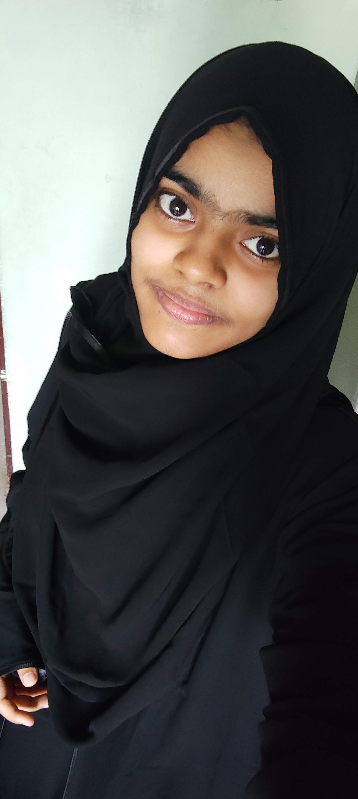

Haneena Nasar
M.com Gratuate and a future Web Developer
Summary:
A graduate in M.com who has lot a curiosity in learning programming as much interest I had in accounting.I'm a budding web developer who is in need of securing a challenging position in a reputed organisation to expand my knowledge, learning and skills. I'm a kind of person who thinks learning is wast and know matter what you learn try to have knowledge in each bit what you come across.
Education:
- Master of commerce in the year 2022
- Bacholer of commerce in the year 2020
- Higher Secondary in 2017
- SSLC in 2015
Work Experience:
I'm a fresher with the quench of thirst to learn more and do my level best.
Skills:
- Good oral and written Communication.
- Experience in using Canva, Microsoft Office ( Word, Excel and PowerPoint).
- Basic knowledge in css, javascript, bootstrap.
- Expert knowledge in html.
- Good at drawing.
Languages:
- English
- Malayalam
- Tamil
- Hindi
Additional courses:
- Completed tally ERP 9 and Tax Accounting
- Completed Libre Office Suite Writer
- Completed certificate course on Yoga, Food preservation, Tourism and travel management.
Presentation and Workshops:
- Presented a paper titled on " Forms of Entrepreneurial Establishment" at Sarada College for women (Autonomous) on January 2020.
- Presented a webinar paper on "Earning passive income through affiliate marketing" with the webinar title "Smarter ways of making money online in digital era" at Sri Sarada College for women (Autonomous) on January 2021.
- Presented a webinar paper on "The structure of Indian IP organization " with the webinar title "Unfolding IPR an exigency in intangible economy " at Sri Sarada College for women (Autonomous) on November 2021.
- Participanted in a workshop on "Net/Set Coaching" organised by PG & Research department of commerce, IQAC and Research cell of Sri Sarada College for women (Autonomous).
My Hobbies: